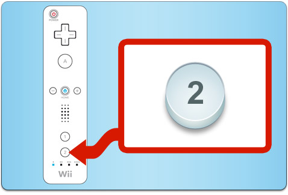

Pour jouer avec votre manette Wii Remote, pointez-la vers l’écran.
Vous pouvez utiliser  pour :
pour :
- Déplacer votre personnage à un endroit précis. Placez le curseur sur l'endroit souhaité et appuyez sur .
- Aller voir d’autres personnages pour écouter ce qu’ils ont à dire.
- Ramasser les objets et les pièces indice (Hint Coins).
- Répondre au téléphone ACME (ACME Phone).

 se trouve sous votre manette Wii Remote. Si vous appuyez sur lorsque vous êtes dans une rue, vous passerez en mode de vue Scanneur (Scanner). Il indique les objets intéressants en les mettant en surbrillance.
se trouve sous votre manette Wii Remote. Si vous appuyez sur lorsque vous êtes dans une rue, vous passerez en mode de vue Scanneur (Scanner). Il indique les objets intéressants en les mettant en surbrillance.
Pour ramasser ces objets, placez le curseur sur l'objet tout en appuyant sur et sur simultanément.
Dans certaines énigmes, vous devrez faire pivoter des objets. Pour ceci, placez le curseur sur l'objet tout en appuyant sur et sur simultanément.
Si vous appuyez sur  lorsque vous êtes dans la rue, vous ouvrirez le téléphone ACME (ACME Phone). Appuyez à nouveau pour fermer le téléphone ACME (ACME Phone).
lorsque vous êtes dans la rue, vous ouvrirez le téléphone ACME (ACME Phone). Appuyez à nouveau pour fermer le téléphone ACME (ACME Phone).
Appuyez sur pour revenir au menu HOME.

Appuyez sur  pour fermer l’énigme.
pour fermer l’énigme.

 , sur la manette Wii Remote peut s'avérer pratique si vous vous retrouvez face à face avec Carmen Sandiego.
, sur la manette Wii Remote peut s'avérer pratique si vous vous retrouvez face à face avec Carmen Sandiego.